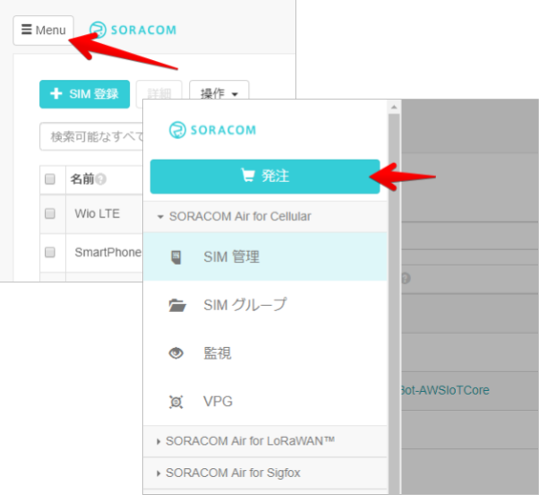
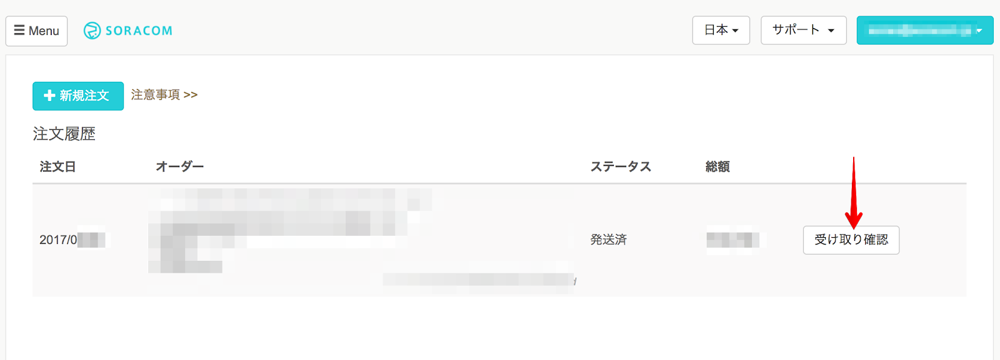
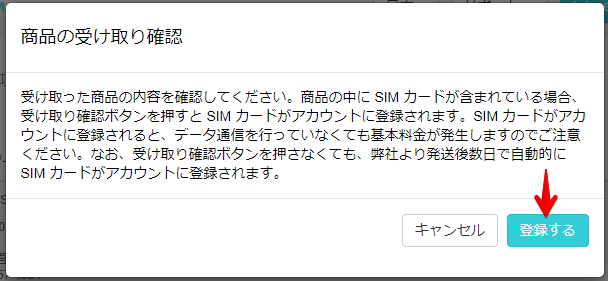

SORACOM Air for セルラーを利用する際、SORACOM アカウントに対して SORACOM IoT SIM を登録する必要があります。ここではSORACOM ユーザーコンソールから発注して入手した SIM を SORACOM へ登録する方法を学びます。
対象となる SIM
この手順で対象となる SIM は以下の通りです。
- SORACOM 特定地域向け IoT SIM / plan-D
- 同 / plan-K
- 同 / plan-KM1
- 同 / plan-DU
- SORACOM LTE-M Button for Enterprise
- SORACOM LTE-M Button Plus
本手順ではこれらすべてをまとめて「SIM」と称します。
できるようになる事
このハンズオンでサポートしない事 (前提知識)
- SORACOM アカウントの作成 (こちらで学べます)
- SIM の発注や入手方法 (発注はこちら(準備中)で学べます)
- SORACOM ユーザーコンソールの利用方法
このコンテンツの進め方
ページの内容を読み、また作業を行ったら右下の［Next］を押して次のステップへ進みます。また、［Back］を使って戻ったり、左のナビゲーションメニューでもページの移動が可能です。
左上の［×］を押してコンテンツを終了することができます。また、ページを開きなおすことで再開できます。ページのアドレスはブラウザの［履歴］メニューを利用してください。
SORACOM ユーザーコンソールから発注した SIM は受け取る事で、SORACOM に登録され、利用可能な状態となります。受け取り作業は SORACOM ユーザーコンソールで行えます。
SORACOM ユーザーコンソールにログインをした後、左上の Menu をクリックして表示されるメニューの発注をクリックします。

発注一覧が表示されます。
ソラコムから発送済みの商品で SIM が含まれている発注には受け取り確認ボタンが表示されています。お手元の商品を確認の上、SORACOM へ登録したい SIM が含まれている発注の受け取り確認をクリックしてください。

商品の受け取り確認のダイアログが表示されます。 登録するをクリックします。

以上で SIM の受け取り（＝登録）は完了です。